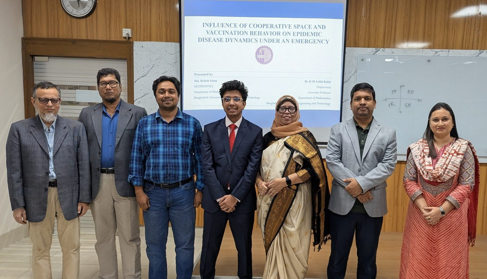

05–06 Feb 2025

2023–2025 · Department of Mathematics, BUET
Containing an outbreak is not only an epidemiological problem. Non-pharmaceutical interventions — distancing, masking, staying away from crowds — work only if enough people choose to follow them, and people reach that choice much the way they decide whether to be vaccinated: weighing a private cost against a perceived benefit as the outbreak moves.
The thesis couples both decisions into a single disease model. Evolutionary game theory supplies the rule by which vaccination and NPI strategies spread, a compartmental model supplies the epidemic they are responding to, and each feeds back into the other. Populations that cooperate fully hold incidence far below populations that defect — far enough that collective behaviour, not the pathogen alone, decides the outcome.